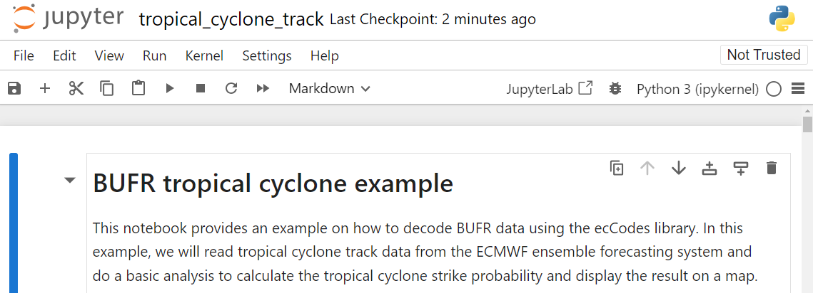

Scaricare e decodificare dati da WIS2
Risultati di apprendimento!
Al termine di questa sessione pratica, sarai in grado di:
- utilizzare il "wis2downloader" per iscriverti alle notifiche dei dati WIS2 e scaricare i dati sul tuo sistema locale
- visualizzare lo stato dei download nel dashboard di Grafana
- decodificare alcuni dati scaricati utilizzando il container "decode-bufr-jupyter"
Introduzione
In questa sessione imparerai come configurare un'iscrizione a un Broker WIS2 e scaricare automaticamente i dati sul tuo sistema locale utilizzando il servizio "wis2downloader" incluso nel wis2box.
Riguardo wis2downloader
Il wis2downloader è disponibile anche come servizio autonomo che può essere eseguito su un sistema diverso da quello che pubblica le notifiche WIS2. Vedi wis2downloader per maggiori informazioni sull'uso del wis2downloader come servizio autonomo.
Se desideri sviluppare il tuo servizio per iscriverti alle notifiche WIS2 e scaricare dati, puoi utilizzare il codice sorgente di wis2downloader come riferimento.
Altri
I seguenti strumenti possono essere utilizzati anche per scoprire e accedere ai dati da WIS2:
- pywiscat offre capacità di ricerca sopra il Catalogo Globale di Scoperta WIS2 a supporto della segnalazione e analisi del Catalogo WIS2 e dei suoi metadati di scoperta associati
- pywis-pubsub offre capacità di iscrizione e download dei dati WMO da servizi di infrastruttura WIS2
Preparazione
Prima di iniziare, effettua il login al tuo VM studente e assicurati che la tua istanza di wis2box sia attiva e funzionante.
Visualizzazione del dashboard wis2downloader in Grafana
Apri un browser web e naviga al dashboard di Grafana per la tua istanza di wis2box andando su http://YOUR-HOST:3000.
Clicca su dashboard nel menu a sinistra, e poi seleziona il wis2downloader dashboard.
Dovresti vedere il seguente dashboard:

Questo dashboard si basa sulle metriche pubblicate dal servizio wis2downloader e ti mostrerà lo stato dei download attualmente in corso.
Nell'angolo in alto a sinistra puoi vedere le iscrizioni attualmente attive.
Tieni aperto questo dashboard poiché lo utilizzerai per monitorare il progresso dei download nel prossimo esercizio.
Revisione della configurazione di wis2downloader
Il servizio wis2downloader avviato dallo stack wis2box può essere configurato utilizzando le variabili d'ambiente definite nel tuo file wis2box.env.
Le seguenti variabili d'ambiente sono utilizzate dal wis2downloader:
- DOWNLOAD_BROKER_HOST: Il nome host del broker MQTT a cui connettersi. Predefinito a globalbroker.meteo.fr
- DOWNLOAD_BROKER_PORT: La porta del broker MQTT a cui connettersi. Predefinito a 443 (HTTPS per websockets)
- DOWNLOAD_BROKER_USERNAME: Il nome utente da utilizzare per connettersi al broker MQTT. Predefinito a everyone
- DOWNLOAD_BROKER_PASSWORD: La password da utilizzare per connettersi al broker MQTT. Predefinito a everyone
- DOWNLOAD_BROKER_TRANSPORT: websockets o tcp, il meccanismo di trasporto da utilizzare per connettersi al broker MQTT. Predefinito a websockets,
- DOWNLOAD_RETENTION_PERIOD_HOURS: Il periodo di conservazione in ore per i dati scaricati. Predefinito a 24
- DOWNLOAD_WORKERS: Il numero di lavoratori di download da utilizzare. Predefinito a 8. Determina il numero di download paralleli.
- DOWNLOAD_MIN_FREE_SPACE_GB: Lo spazio libero minimo in GB da mantenere sul volume che ospita i download. Predefinito a 1.
Per rivedere la configurazione attuale del wis2downloader, puoi utilizzare il seguente comando:
cat ~/wis2box/wis2box.env | grep DOWNLOAD
Rivedi la configurazione di wis2downloader
Qual è il broker MQTT predefinito a cui si connette il wis2downloader?
Qual è il periodo di conservazione predefinito per i dati scaricati?
Clicca per rivelare la risposta
Il broker MQTT predefinito a cui si connette il wis2downloader è globalbroker.meteo.fr.
Il periodo di conservazione predefinito per i dati scaricati è di 24 ore.
Aggiornamento della configurazione di wis2downloader
Per aggiornare la configurazione di wis2downloader, puoi modificare il file wis2box.env. Per applicare le modifiche puoi rieseguire il comando di avvio per lo stack wis2box:
python3 wis2box-ctl.py start
E vedrai il servizio wis2downloader riavviarsi con la nuova configurazione.
Puoi mantenere la configurazione predefinita ai fini di questo esercizio.
Aggiunta di iscrizioni a wis2downloader
All'interno del container wis2downloader, puoi utilizzare la riga di comando per elencare, aggiungere ed eliminare iscrizioni.
Per accedere al container wis2downloader, utilizza il seguente comando:
python3 wis2box-ctl.py login wis2downloader
Poi utilizza il seguente comando per elencare le iscrizioni attualmente attive:
wis2downloader list-subscriptions
Questo comando restituisce un elenco vuoto poiché attualmente non ci sono iscrizioni attive.
Ai fini di questo esercizio, ci iscriveremo al seguente argomento cache/a/wis2/de-dwd-gts-to-wis2/#, per iscriversi ai dati pubblicati dal gateway GTS-to-WIS2 ospitato da DWD e scaricare le notifiche dal Global Cache.
Per aggiungere questa iscrizione, utilizza il seguente comando:
wis2downloader add-subscription --topic cache/a/wis2/de-dwd-gts-to-wis2/#
Poi esci dal container wis2downloader digitando exit:
exit
Controlla il dashboard wis2downloader in Grafana per vedere la nuova iscrizione aggiunta. Aspetta qualche minuto e dovresti vedere i primi download iniziare. Passa al prossimo esercizio una volta confermato che i download sono iniziati.
Visualizzazione dei dati scaricati
Il servizio wis2downloader nello stack wis2box scarica i dati nella directory 'downloads' nella directory che hai definito come WIS2BOX_HOST_DATADIR nel tuo file wis2box.env. Per visualizzare i contenuti della directory dei download, puoi utilizzare il seguente comando:
ls -R ~/wis2box-data/downloads
Nota che i dati scaricati sono memorizzati in directory denominate secondo l'argomento su cui è stata pubblicata la Notifica WIS2.
Rimozione delle iscrizioni da wis2downloader
Successivamente, accedi nuovamente al container wis2downloader:
python3 wis2box-ctl.py login wis2downloader
e rimuovi l'iscrizione che hai fatto dal wis2downloader, utilizzando il seguente comando:
wis2downloader remove-subscription --topic cache/a/wis2/de-dwd-gts-to-wis2/#
E esci dal container wis2downloader digitando exit:
exit
Controlla il dashboard wis2downloader in Grafana per vedere l'iscrizione rimossa. Dovresti vedere i download fermarsi.
Scarica e decodifica i dati per una traiettoria di ciclone tropicale
In questo esercizio, ti iscriverai al Broker di Formazione WIS2 che sta pubblicando dati di esempio a scopo di formazione. Configurerai un'iscrizione per scaricare dati per una traiettoria di ciclone tropicale. Quindi decodificherai i dati scaricati utilizzando il container "decode-bufr-jupyter".
Iscriviti al wis2training-broker e configura una nuova iscrizione
Questo dimostra come iscriversi a un broker che non è il broker predefinito e ti permetterà di scaricare alcuni dati pubblicati dal Broker di Formazione WIS2.
Modifica il file wis2box.env e cambia DOWNLOAD_BROKER_HOST in wis2training-broker.wis2dev.io, cambia DOWNLOAD_BROKER_PORT in 1883 e cambia DOWNLOAD_BROKER_TRANSPORT in tcp:
# impostazioni del downloader
DOWNLOAD_BROKER_HOST=wis2training-broker.wis2dev.io
DOWNLOAD_BROKER_PORT=1883
DOWNLOAD_BROKER_USERNAME=everyone
DOWNLOAD_BROKER_PASSWORD=everyone
# meccanismo di trasporto per il download (tcp o websockets)
DOWNLOAD_BROKER_TRANSPORT=tcp
Poi esegui nuovamente il comando 'start' per applicare le modifiche:
python3 wis2box-ctl.py start
Controlla i log di wis2downloader per vedere se la connessione al nuovo broker è stata successful:
docker logs wis2downloader
Dovresti vedere il seguente messaggio di log:
...
INFO - Connessione...
INFO - Host: wis2training-broker.wis2dev.io, port: 1883
INFO - Connesso con successo
Ora configureremo una nuova iscrizione all'argomento per scaricare i dati della traiettoria del ciclone dal Broker di Formazione WIS2.
Accedi al container wis2downloader:
python3 wis2box-ctl.py login wis2downloader
E esegui il seguente comando (copia-incolla questo per evitare errori di battitura):
wis2downloader add-subscription --topic origin/a/wis2/int-wis2-training/data/core/weather/prediction/forecast/medium-range/probabilistic/trajectory
Esci dal container wis2downloader digitando exit.
Aspetta fino a quando non vedi i download iniziare nel dashboard wis2downloader in Grafana.
Scaricare dati dal Broker di Formazione WIS2
Il Broker di Formazione WIS2 è un broker di test che viene utilizzato a scopo di formazione e potrebbe non pubblicare dati tutto il tempo.
Durante le sessioni di formazione in presenza, il formatore locale assicurerà che il Broker di Formazione WIS2 pubblichi dati per te da scaricare.
Se stai facendo questo esercizio al di fuori di una sessione di formazione, potresti non vedere alcun dato scaricato.
Controlla che i dati siano stati scaricati controllando nuovamente i log di wis2downloader con:
docker logs wis2downloader
Dovresti vedere un messaggio di log simile al seguente:
[...] INFO - Messaggio ricevuto sotto l'argomento origin/a/wis2/int-wis2-training/data/core/weather/prediction/forecast/medium-range/probabilistic/trajectory
[...] INFO - Scaricato A_JSXX05ECEP020000_C_ECMP_...
Decodifica dei dati scaricati
Per dimostrare come puoi decodificare i dati scaricati, avvieremo un nuovo container utilizzando l'immagine 'decode-bufr-jupyter'.
Questo container avvierà un server Jupyter notebook sulla tua istanza che include la libreria "ecCodes" che puoi utilizzare per decodificare i dati BUFR.
Utilizzeremo i notebook di esempio inclusi in ~/exercise-materials/notebook-examples per decodificare i dati scaricati per le traiettorie dei cicloni.
Per avviare il container, utilizza il seguente comando:
docker run -d --name decode-bufr-jupyter \
-v ~/wis2box-data/downloads:/root/downloads \
-p 8888:8888 \
-e JUPYTER_TOKEN=dataismagic! \
mlimper/decode-bufr-jupyter
Riguardo il container decode-bufr-jupyter
Il container decode-bufr-jupyter è un container personalizzato che include la libreria ecCodes e esegue un server Jupyter notebook. Il container si basa su un'immagine che include la libreria ecCodes per decodificare i dati BUFR, insieme a librerie per la graficazione e l'analisi dei dati.
Il comando sopra avvia il container in modalità distaccata, con il nome decode-bufr-jupyter, la porta 8888 è mappata al sistema host e la variabile d'ambiente JUPYTER_TOKEN è impostata su dataismagic!.
Il comando sopra monta anche la directory ~/wis2box-data/downloads su /root/downloads nel container. Questo assicura che i dati scaricati siano disponibili al server Jupyter notebook.
Una volta avviato il container, puoi accedere al server Jupyter notebook navigando su http://YOUR-HOST:8888 nel tuo browser web.
Vedrai una schermata che ti chiede di inserire una "Password o token".
Fornisci il token dataismagic! per accedere al server Jupyter notebook.
Dopo aver effettuato l'accesso, dovresti vedere la seguente schermata che elenca le directory nel container:

Fai doppio clic sulla directory example-notebooks per aprirla.
Dovresti vedere la seguente schermata che elenca i notebook di esempio, fai doppio clic sul notebook tropical_cyclone_track.ipynb per aprirlo:

Ora dovresti trovarti nel notebook Jupyter per la decodifica dei dati della traiettoria del ciclone tropicale:

Leggi le istruzioni nel notebook ed esegui le celle per decodificare i dati scaricati relativi alle traiettorie dei cicloni tropicali. Esegui ogni cella facendo clic sulla cella e poi sul pulsante di esecuzione nella barra degli strumenti o premendo Shift+Enter.
Alla fine dovresti vedere un grafico della probabilità di impatto per le traiettorie dei cicloni tropicali:

Question
Il risultato mostra la probabilità prevista di tracciato di tempesta tropicale entro 200 km. Come aggiorneresti il notebook per visualizzare la probabilità prevista di tracciato di tempesta tropicale entro 300 km ?
Clicca per rivelare la risposta
Per aggiornare il notebook in modo da visualizzare la probabilità prevista di tracciato di tempesta tropicale a una distanza diversa, puoi aggiornare la variabile distance_threshold nel blocco di codice che calcola la probabilità di impatto.
Per visualizzare la probabilità prevista di tracciato di tempesta tropicale entro 300 km,
# set distance threshold (meters)
distance_threshold = 300000 # 300 km in meters
Poi riesegui le celle nel notebook per vedere il grafico aggiornato.
Decodifica dei dati BUFR
L'esercizio che hai appena fatto ha fornito un esempio specifico di come puoi decodificare i dati BUFR utilizzando la libreria ecCodes. Diversi tipi di dati possono richiedere diversi passaggi di decodifica e potresti dover consultare la documentazione per il tipo di dati con cui stai lavorando.
Per maggiori informazioni consulta la documentazione ecCodes.
Conclusione
Congratulazioni!
In questa sessione pratica, hai imparato a:
- utilizzare 'wis2downloader' per sottoscriverti a un WIS2 Broker e scaricare dati sul tuo sistema locale
- visualizzare lo stato dei download nel dashboard di Grafana
- decodificare alcuni dati scaricati utilizzando il container 'decode-bufr-jupyter'